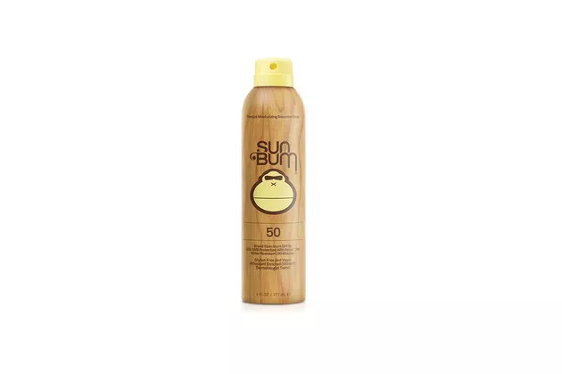

Whether you're going for a long run outdoors or spending time in the pool, it's essential to protect your skin against harmful UV rays. But to do that, you'll need a water-resistant sunscreen.
Unlike regular sunscreen, water-resistant ones are less likely to wash off when in water or when performing sweat-inducing activities.
"Although there is technically no such thing as waterproof sunscreen, there are formulas that are water-resistant, and this will be indicated on the label, along with the amount of time users should expect that it will remain effective when exposed to water," says Rebecca Marcus, MD, board-certified dermatologist and founder of Maei MD.
How We Chose
We reached out to a dermatologist, who offered recommendations and broke down what to look for when shopping for water-resistant sunscreens. We selected the following products based on criteria including:
- Duration of water-resistance
- Ingredients
- SPF
1. Best Overall: Blue Lizard Sensitive Mineral SPF 50 Sunscreen Lotion
This sunscreen comes highly recommended by Dr. Marcus for its mineral-based formula. Mineral sunscreens use active ingredients such as zinc oxide and titanium dioxide, which serve as a physical barrier to block UV rays. (By contrast, chemical sunscreens absorb into the skin.)
This one has 8 percent titanium dioxide and 10 percent zinc oxide to protect against both UVA and UVB rays.
Not only is it easily spreadable, it "absorbs well into the skin," Dr. Marcus says.
It also offers 80 minutes of sweat- and water-resistance, and it's free of parabens and fragrance, making it ideal for all skin types, including sensitive skin.
2. Best for Face: EltaMD Sport Broad-Spectrum SPF 50 Sunscreen
Whether you're going for a run or taking a dip in the pool, Dr. Marcus recommends Elta MD's SPF 50 sunscreen for your face because it's sweat- and water-resistant for up to 80 minutes.
Formulated with beeswax and castor oil, the sunscreen is super hydrating and smooth to apply.
For best use, it's recommended to apply 30 minutes before sun exposure and every two to three hours to maintain protection.
3. Best for Swimming: Supergoop Play SPF 50 Sunscreen Lotion
Despite launching in 2007, Supergoop has risen in popularity in recent years, becoming a favorite among beauty fanatics, influencers and sun-tanners.
If you're looking for sunscreen for swimming, look no further than Supergoop Play SPF 50. It's ideal for swimming because it has "a hydrating formula that is water-resistant for 80 minutes, allowing for plenty of time between reapplications," says Dr. Marcus.
It also comes in a large container, which encourages liberal use, she adds.
4. Best for Surfing: Sun Bum SPF 50 Sunscreen Spray
We recommend Sun Bum's SPF 50 sunscreen for surfing because it's resistant to water for up to 80 minutes and comes in a spray can, making for easy application between rides.
Enriched with vitamin E, the sunscreen works to prevent free radicals from damaging and aging your skin. Additionally, it's free of oxybenzone and octinoxate, which are ingredients that can harm coral reefs, making this product "reef-friendly."
5. Best for Sensitive Skin: La Roche-Posay Anthelios Mineral SPF 50 Sunscreen
Sunscreens can be formulated with chemicals that irritate the skin, but this 100 percent mineral sunscreen is free of oil, parabens, chemical sunscreen filters, fragrance, oxybenzone and octinoxate, making a skin breakout unlikely.
The formula is weightless, fast-absorbing and leaves a matte finish. Plus, it received the seal of approval from the Skin Cancer Foundation.
Beyond these attributes, it offers protection for up to 40 minutes and is infused with senna alata extract, a tropical plant leaf that prevents skin aging.
6. Best Stick: Shiseido SPF 50 Clear Sunscreen Stick

Shiseido's SPF 50 water-resistant sunscreen offers up to 80 minutes of protection. It's formulated with the brand's signature technology, which creates an invisible, protective layer in water and heat. You can easily apply this sunscreen thanks to the stick applicator. Simply twist the knob and apply generously over your face and neck. It works on normal, combination, dry, and oily skin types and glides over makeup smoothly.
What to Look for in Waterproof Sunscreens
1. Ingredients
Not all water-resistant sunscreens are made the same, so you'll want to choose ones with active ingredients that block UV rays, such as zinc oxide and titanium dioxide.
Watch out for ingredients that can irritate the skin like fragrance, parabens and chemical filters.
Additionally, it's best to look for a formula that states it is non-comedogenic, so it will not clog pores and potentially contribute to acne breakouts, Dr. Marcus says.
2. SPF
SPF, also known as the sun protection factor, is an indicator of how well your sunscreen protects against UVB rays.
According to Dr. Marcus, sunscreens should be SPF 30 or higher.
It's important to note that a higher SPF does not mean more protection. For best protection, it's best to reapply several times throughout the day and follow the product's instructions.
3. Duration of Water-Resistance
Water-resistant sunscreens will have a water-resistance duration printed on the label, usually ranging between 40 and 80 minutes.
If a product is water-resistant for 80 minutes, you should reapply a little before the 80-minute window ends for the best protection.